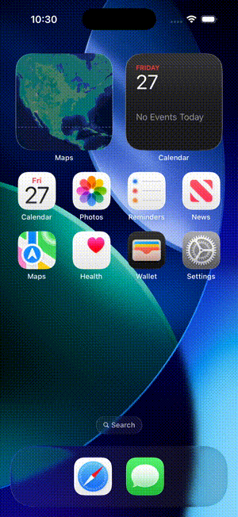

iPhone simulator (iPhone 17 Pro, iOS 27.2; simulator, not a physical iPhone). The app starts a new game on the shipped mods/rundale world, now validated through world_state_from_mod. The status header shows Kilteevan Village, the opening scene renders, and /look, /wait 10 and /people respond. This is the XCUITest RundalePhase2UITests.testPhase2FoundationBootsCanonicalWorldAndPeig with 4 second holds; the app uses the deterministic Endpoint transport, so replies are fixtures.
